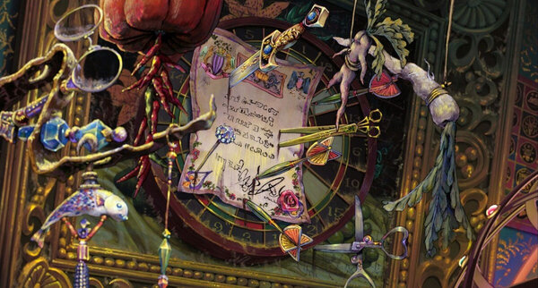

In dominant social narratives, beauty represents youth, and young and beautiful is the most important thing
for a woman to be. Naomi Wolf’s The Beauty Myth explains that youth and beauty are so interconnected that
older women are cast aside and seen as worthless, such that they are rarely even seen in media. Wolf also
explains that the beauty myth keeps women self-focused and self-doubting. Wolf explains that the media “ignore
older women or pretend they don’t exist: magazines try to avoid photographs of older women, and when they
feature celebrities who are over sixty, ‘retouching artists’ conspire to ‘help’ beautiful women look more
beautiful; i.e., less their age.”
Chapter II
"The mess which Sophie had to clean in the Howl’s house."
This dismissal of older women is found even in anime, where infamous “Christmas cake” jokes devalue the worth
of any woman who dares to be unmarried and over 25, an idiom which is thankfully being phased out. Even if
she is under a curse, Sophie is still unique as she is not only aging but visibly elderly for much of the
movie.
The Witch of the Waste, seeking out Howl’s heart and jealous of Sophie, casts a curse that turns her into an
old woman. As Sophie can no longer be conventionally beautiful, the witch believes she has eliminated all
competition–labeling Sophie as such even though she has shown no intention of pursuing Howl at the time. The
beauty myth naturally pits old and young against one another, breaking the bond between women of different
generations: “The links between generations of women must always be newly broken: Older women fear young ones,
young women fear old, and the beauty myth truncates for all the female life span.”
Afraid of her age, the witch tries to cast spells to make herself more desirable. Like many women, she strives
for a youthful appearance and draws on potions and rituals to maintain her youth. Wolf explains that women
are never able to escape these rituals. Aged women are not free to put the rites of beauty behind them, even
when society tells them they are unwanted.
Cursing Sophie with old age is the ultimate defeat through the eyes of the witch, because the beauty myth does
not show age as desirable. Like many women, Sophie is upset and frightened by her age. She initially tries to
hide it, concealing herself from her mother. Her mother, in turn, shares traditional beliefs about beauty by
pointing out that Sophie sounds like a “ghastly” 90-year-old woman. Sophie, distressed by her appearance, runs
away and hides in the wastes. As Anushka Rees notes in Beyond Beautiful, hiding is a very common choice for
women who believe they do not meet conventional standards of beauty.
While hiding in the wastes, Sophie finds a haven in Howl’s castle. Still uncomfortable with her aged
appearance, she once jokes that she is the scariest witch of them all, which aligns with Wolf’s observation
that older women are often seen as dismissable old hags. Though Sophie initially believes that her only value
is as a housekeeper, she finds that her strong feelings are providing her with vitality. Once timid, Sophie
becomes aware of her strengths. She also becomes aware of her contentment. She begins to appreciate her age,
declaring that it sets her free. The more alive and self-accepting Sophie feels, the more beautiful she
becomes. It is by accepting her age, wisdom and deep feelings that she can project herself into the
world—and, though she does not notice it at first, begin to break the curse itself.
Chapter III
"Sophie's hometown during the air raid."
While Sophie begins a path of self-growth, Howl shows that the harmful impact of beauty myths are not only
limited to women. Howl colours his hair badly after Sophie has cleaned and rearranged the bathroom and
dramatically wails that “there’s no point in living if [he] can’t be beautiful”—echoing Wolf’s discussion
about a lack of beauty being the worst thing that can happen to a person. For a moment, both Howl and Sophie
are overcome with grief. Sophie declares that she has never been beautiful and runs into the rain to cry.
Even in his despair, it is simple for Howl to magically fix his hair in a moment; Sophie, however, is still
trapped under several additional layers of social stigma.
Howl reveals that his obsession with beauty hides deeper fears, as he is being pressured to use his magic to
intervene in the ongoing war. Sophie, no longer burdened with expectations of prettiness, finds herself able
to engage with political life for the first time as she goes to the palace in Howl’s place. On her way there,
she meets the Witch of the Waste and asks her to break the spell upon her. The witch reveals that she cannot.
Her powers stripped from her at the palace, she is revealed to be a harmless old woman.
Chapter IV
Sophie's workshop, where she made hats for the clients."
Sophie is juxtaposed against the witch, who once used spells to create beauty, but is old and frail. However,
she, too, ultimately regains her vitality. Initially selfish and vain, pursuing a man who did not want her,
she ends up showing her own growth by helping Sophie. As the movie comes to an end, the witch and Sophie are
no longer rivals. Sophie takes care of the witch in her elderly state, and the witch both metaphorically and
literally relents her supposed claim on Howl’s heart.
When Sophie tells the witch that she has “a big heart,” our younger and older women are united as both leave
the beauty myth behind. While the beauty myth is designed to artificially pit generations of women against
each other, acceptance of the wisdom of age does the very opposite. As Sophie and the witch grow together,
each is able to offer value to the other. Sophie and the witch grow more vital and alive once the false
“competition” over Howl is left behind.
As Sophie reveals her inner strength and passion, her youth begins to return to her. Sophie reveals that
passion, self-acceptance and wisdom are the true roots of beauty. No longer timid, Sophie doesn’t need potions
to break the spell of age. Instead, she stands in her strength and power. This enables her to free herself,
Howl and her friends from sorcery. As Howl has his heart returned to him, he comments on Sophie’s grey hair,
telling her it has all the beauty of the stars—a poetic compliment that rejects grey hair’s usual association
with old age and thus ugliness. Even more importantly, Sophie’s response is that she too likes her new hair;
ending the story with her self-love equally important to that of her romantic partner.
Chapter V
"Sophie's first encounter with the house when she was turned into an old lady."
Howl’s Moving Castle shows the strength of a female protagonist who is willing to embrace her age, and whose
age sets her free from convention and lets her explore her wisdom and her deep feelings. Sophie’s true
transformation is her reliance on inner strength to survive the curse of not being beautiful. In doing so, she
not only shows true beauty but restores the hearts of others.